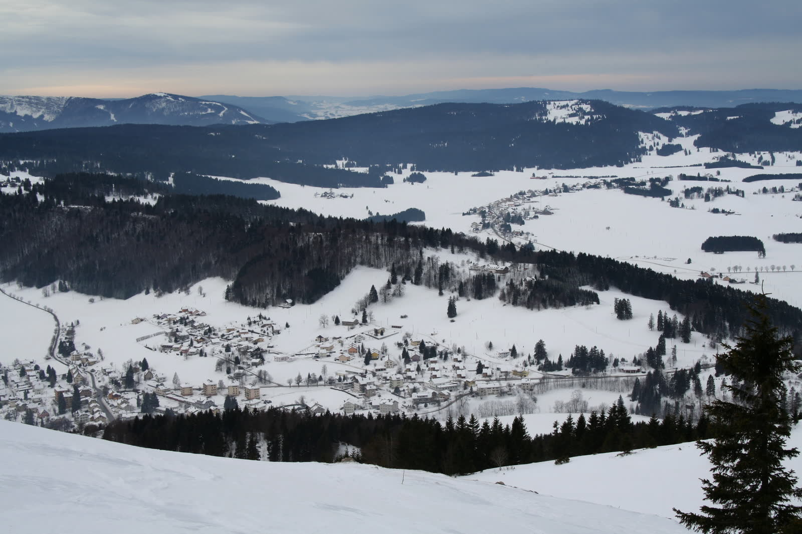
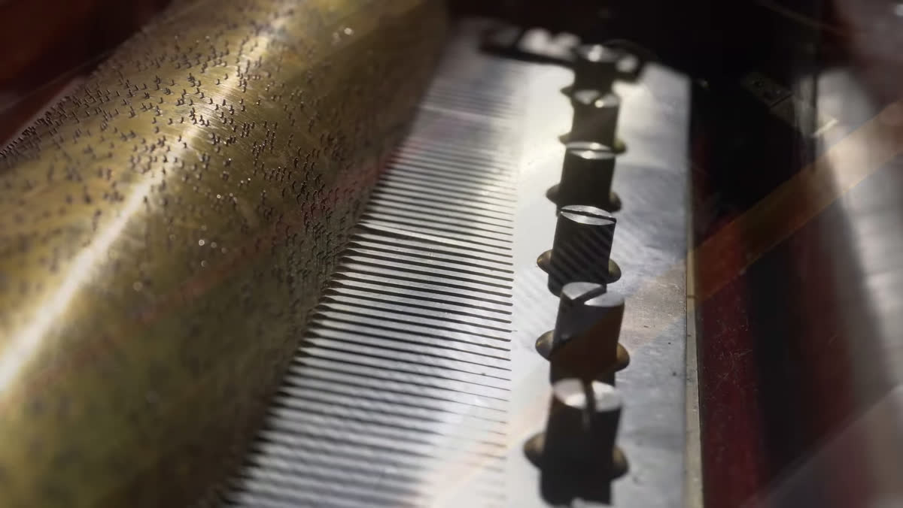
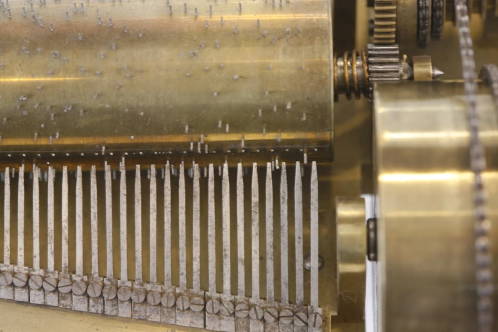
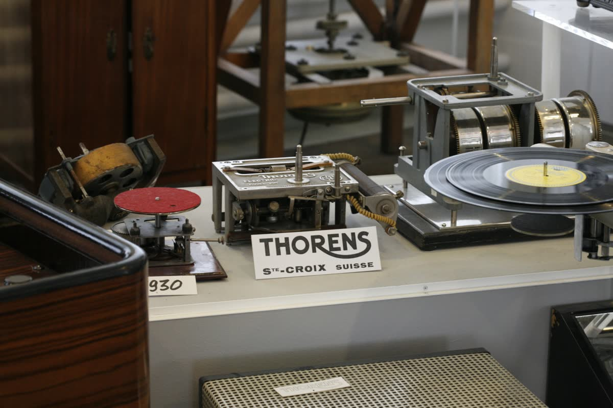
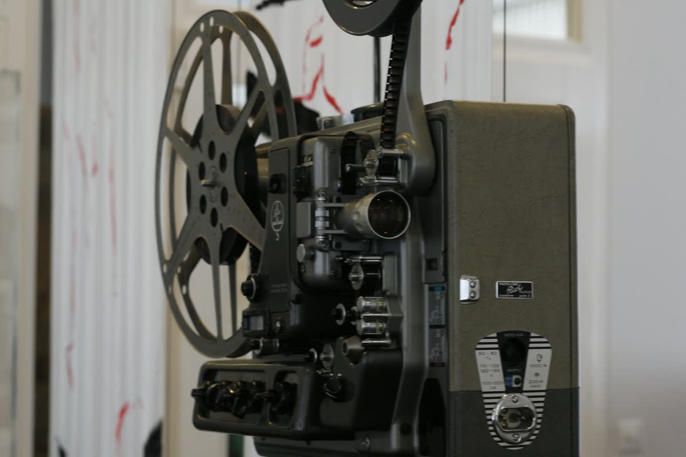
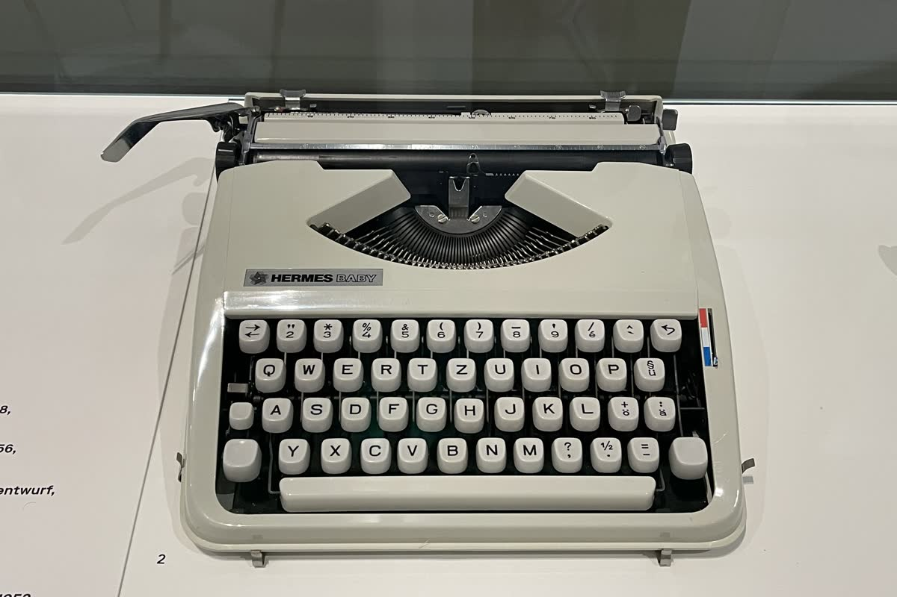
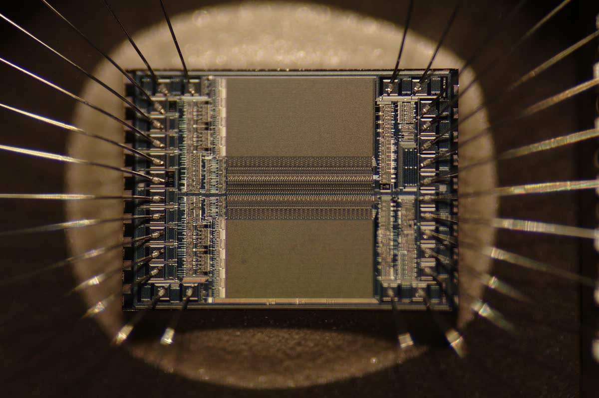
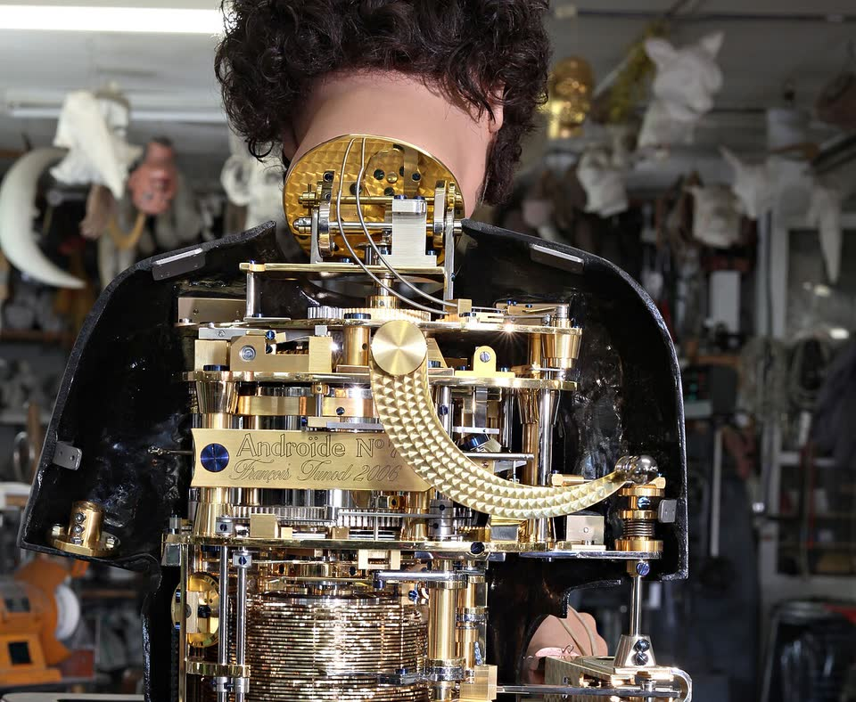

01
L'hiver ferme le village
Six mois par an, la neige ferme le village. Dehors, il n'y a plus rien à faire.
Alors le paysan pose la fourche et prend la lime. C'est l'hiver qui décide, pas le goût.
Photo : Pmau, CC BY-SA 4.0. Sainte-Croix et l'Auberson vus du Praisot, 28 janvier 2006.


02
Une boîte qui joue toute seule
Un cylindre de laiton hérissé de picots tourne contre un peigne d'acier. Chaque picot accroche une dent, et la dent sonne.
Un air entier tient là-dedans. Le village ne vend plus des heures de travail : il vend du son.
Vidéo : Max van der Pol, Kijk en Luistermuseum, CC BY‑SA 4.0, extrait recadré. Boîte à musique à cylindre, Nicole Frères, Genève, 1864. Cylindre de 33,5 cm, huit airs.
03
Les mêmes mains, d'autres objets
Le village ne s'est pas arrêté à la musique. Voici ce qui est sorti des mêmes ateliers.








Le cylindre devient disque, le disque devient pellicule, la pellicule devient le chariot d'une machine à écrire. Les ateliers, eux, ne changent pas. Ce que Sainte-Croix exporte n'a jamais été la boîte à musique : c'est la précision.

04
Une puce remplace trois cents pièces
Ce carré de silicium mesure cinq millimètres sur quatre. Il fait, pour presque rien, ce que trois cents pièces faisaient.
Les usines ferment. Le village se vide.
Ce savoir-faire n'était pas devenu mauvais. Il était devenu inutile.
Photo : Zephyris, CC BY‑SA 3.0, 2011. Puce mémoire EPROM au microscope : la zone montrée mesure environ 5 mm sur 4.


05
Un atelier tourne encore
Dans le village, François Junod fabrique toujours des automates.
Un seul à la fois, sur commande, comme on fait une œuvre.
Le geste n'a pas disparu : il a quitté l'usine pour l'atelier.
Photo : Mario Del Curto, CC BY‑SA 4.0, 14 septembre 2010. Androïde de François Junod, Sainte-Croix, torse ouvert sur son mécanisme ; la plaque gravée, visible sur la photo, porte « François Junod 2006 ».